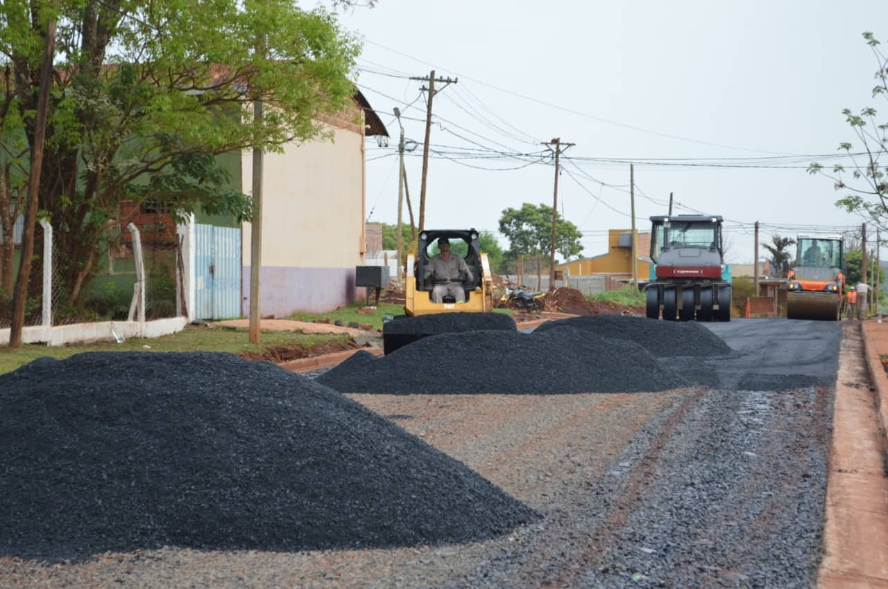
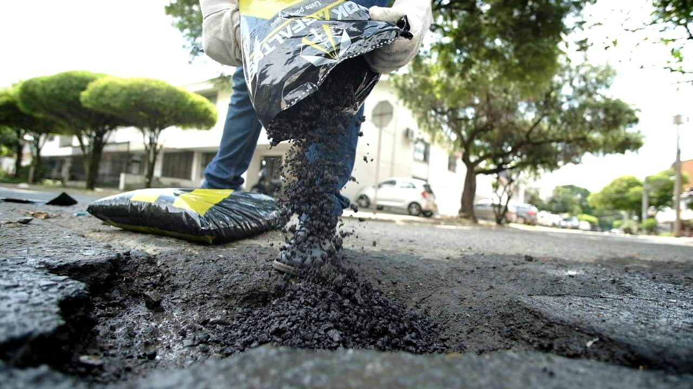
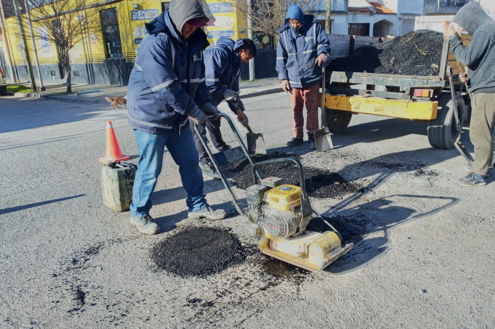
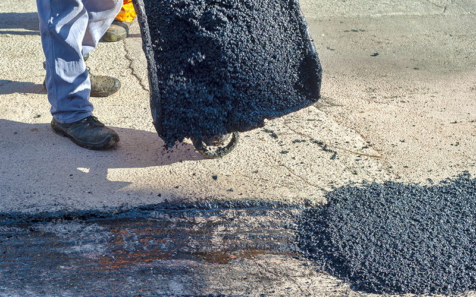
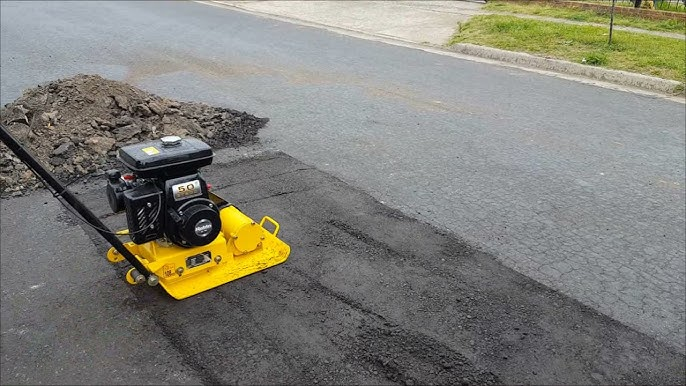

USOS DEL PRODUCTO
Empleabilidad del producto
-
Reparación de baches y grietas entre otras fracturas superficiales.

-
Capa de rodamiento en suelos estabilizados en caminos vecinales o rurales.

-
Caminerías en parques/paseos, campos deportivos, ciclovías y otros.

-
Ideal para reparación y mantenimientos de rutas y autovías.

-
Compactación por presión del tráfico o máquinas compactadoras.
